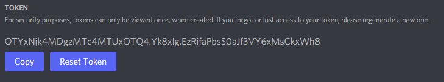

Creating Discord App / Bot
This part is mandatory. By not doing this step, your bot will fail to run and will not be able to join your server.
- Head to https://discord.com/developers and login with your discord account.
- You will land on a screen (you may have applications in there already) that will show a button called "New Application", click it.
- A popup will appear for you to enter your new application name. This is pretty much the name of your bot. Name it what'd you like.
- You will be redirected to your application settings page, this page is where you can change the name of your application and upload an image for the application.
- In the left sidebar, you will see settings such as OAuth2, Bot, Rich Presense, etc... You need to click on "Bot".
- You will be directed to the "build-a-bot" page where you need to click "Add Bot".
- You will be prompted with a warning, you must accept it!
- You now have successfully created a bot. You can edit the name and image on this page.
- You must toggle on the following:
- Once you've toggled the required options on - save your changed and go to the left sidebar, click on OAuth2 -> URL Generator
- On this page in the "scope" area, you must make sure that bot and application.commands are selected.
- Once those are selected, another selection area should appear called "Bot Permissions". Select Administrator, then copy the URL that was generated below that area and invite your bot to your discord server.
- Head back to your bot page under the Bots tab on the left sidebar. Once on the bot page, click on the "Reset Token" button.
- 
The token in this image is not available for use and has been deleted after writing this document!
- Keep that token that was generated in a safe spot, you will need it when you configure your bot on the RexConsole!
Editing SupportBot Config
We're going to be editing one main file called supportbot.yml. This is where your going to put your discord bot token, and make neccessary edits for SupportBot to work for you.
- After ordering SupportBot hosting, you would've received an email from RexHosts Console (if you're a new customer) containing your username and a link to setup your password.
- If you're an existing customer, you will still get an email saying your service has been setup and ready to use; just log into the RexHosts Console.
- After setting up your account, you can now login. After logging in you will be on the consoles main screen showing a list of services you have active. SupportBot will be there, click on it.
- You should now be on the server overview page, showing your IP address, RAM/CPU usage, and a console. We need to access the file manager for this SupportBot. Near the top of the page you will see a bunch of tabs, the one we need is File Manager.
- Once you're in the file manager, you will see all the SupportBot files. We should leave 99% of these files untouched and only focus on one of them in the "Configs" directory.
- Once inside in the configs directory, there will be 3 files - "commands.yml", "supportbot.yml", "ticket-panel.yml". We need to edit the "supportbot.yml" file. Simply click on it and a text editor will open for you to edit the contents inside the file.
- You can edit this file to your liking, however we need to focus on one part of this file right away and that's the "token" part. When we setup our discord application/bot earlier in this document and obtained our token for the bot, we need to copy that token and replace "BOT_TOKEN" with our token (leave the quotes!).
- Now restart your bot and voila! You now have a SupportBot!
- You may notice some warnings in your console such as roles and channels missing. All this means is that you need to edit the supportbot.yml to match your servers roles, categories, and channels. Once done, restart the bot again and the errors should be gone!